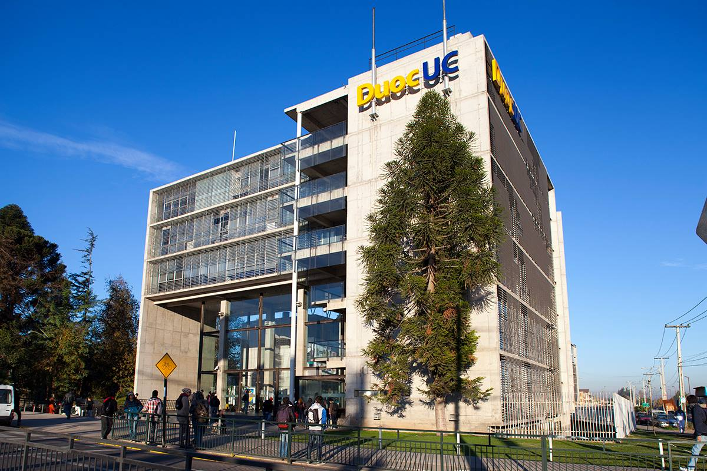

<ion-header [translucent]="true">
  <ion-toolbar color="mycolor">
    <ion-buttons slot="start">
    </ion-buttons>
    <div slot="end">
      <ion-button (click)="salir()" color="danger">Cerrar Sesión</ion-button>
    </div>
  </ion-toolbar>
</ion-header>
<ion-content [fullscreen]="true" class="fondohome ">
  <ion-card>
    <ion-card-content>
      <h1>Hola {{usuario.nombre}}</h1>
      
    </ion-card-content>
  </ion-card>
</ion-content>